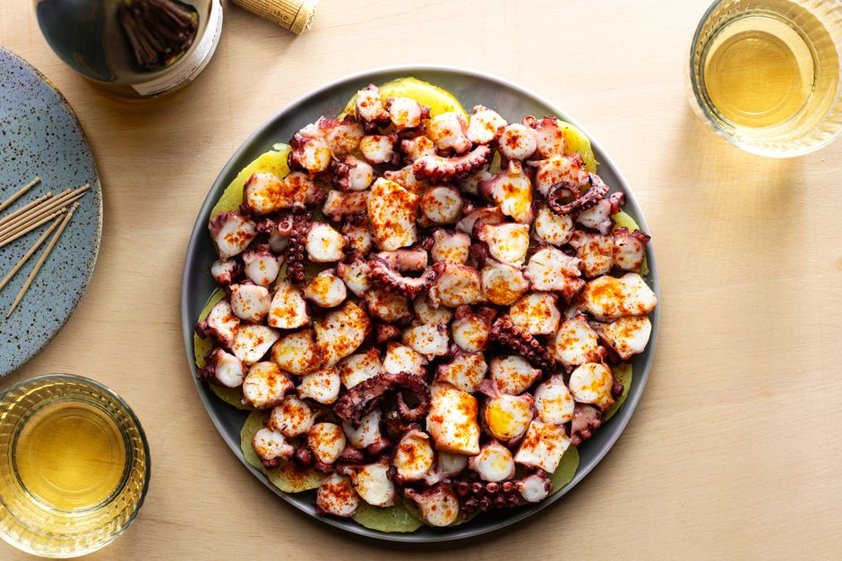

Pulpo Gallego

Octopus served in the traditional Galician style
Octopus, potatoes, olvie oil, and a hint of paprika- it doesn't get any better than this
Ingredients
- 4 Large Potatoes
- 1.5 Pounds Octopus
- A Splash of Olive Oil
- 1 Dash of Sweet Spanish Paprika
- Salt to Taste
Instructions
- Gather the ingredients
- Boil a large pot of water over high heat, once boiling place the octopus into the water and cook until tender- approx. 1 hour. Once a knife can be inserted into the space where the legs and head meet the octopus is ready.
- Remove the octopus, let cool, and then refrigerate for at least 1 hour.
- Cut the chilled meat into bite-sized chuncks
- Poil the potatoes until they can be pierced with a fork- approx. 25 minutes.
- Drain the potaotes, allow to cool, and then cut into 1/3 inch thick slices
- Arange the potatoe slices on a platter, place the octopus on top. Season with salt and parika. Drizzle with olive oil.